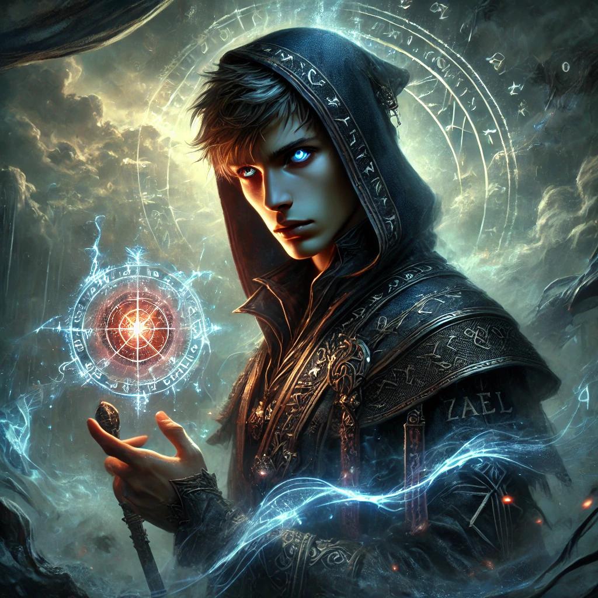

Kael
Savaşçı Büyücü
Detaylar için tıklayın
Savaşçı Büyücü
Grup Lideri
Okçu
Ateş Kraliçesi
Buz Muhafızı
Zethara'nın Kalbi'nin Bekçisi

Gölgeli Orman'ın Sakini
Hakikat'in Taşıyıcısı

Sonsuz Koridorların Bekçisi
Gölgeli Orman'ın Sakini
Gölgeli Orman'ın derinliklerinde yaşayan gizemli varlık. Kahramanların yolculuğunda önemli bir sınav görevi görür.
Sonsuz Koridorların Bekçisi
Zethara'nın gölgesinden yaratılmış gizemli bir varlık. Sonsuz Koridorlar'da kahramanları sınayan ve onlara rehberlik eden bilge bir figür.